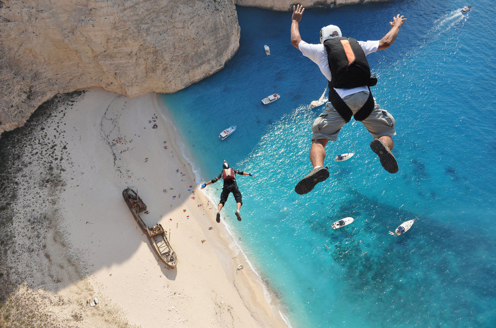
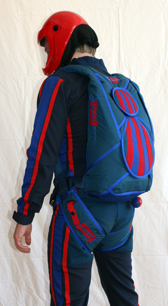
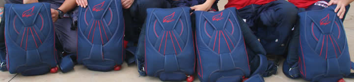
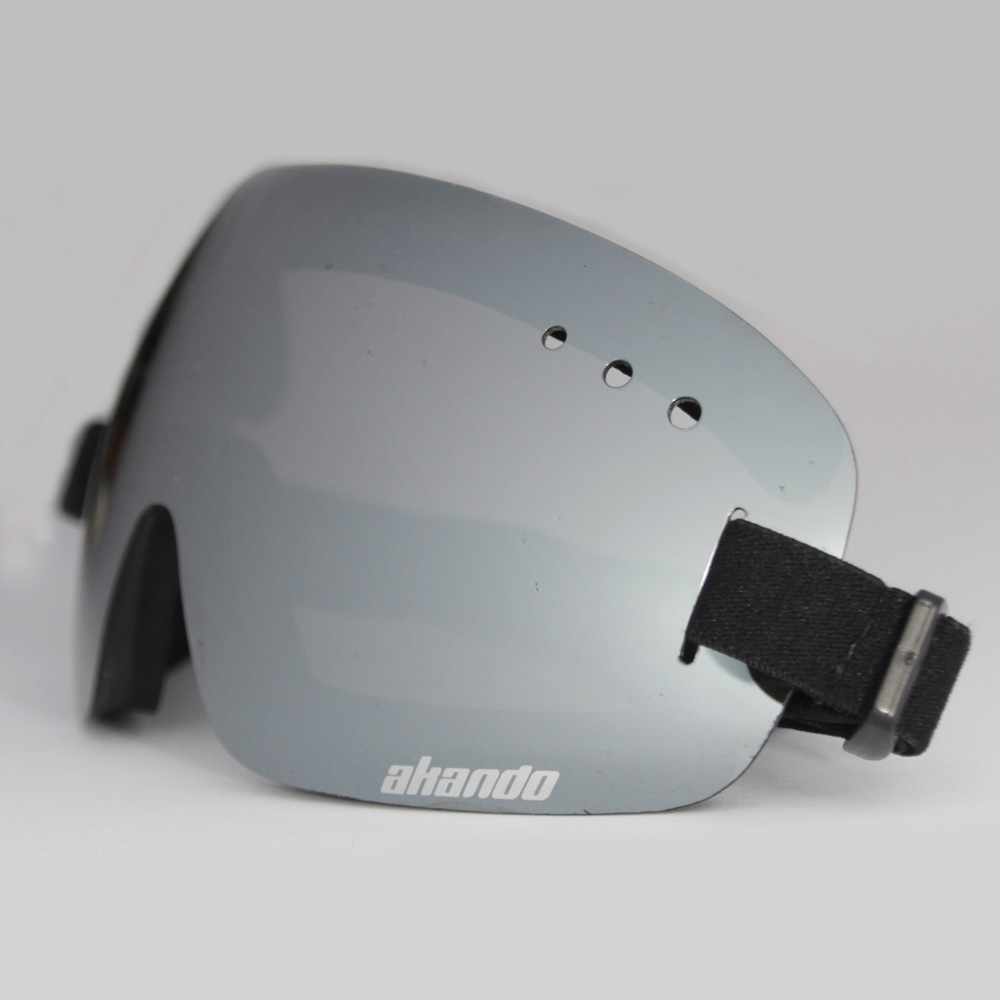
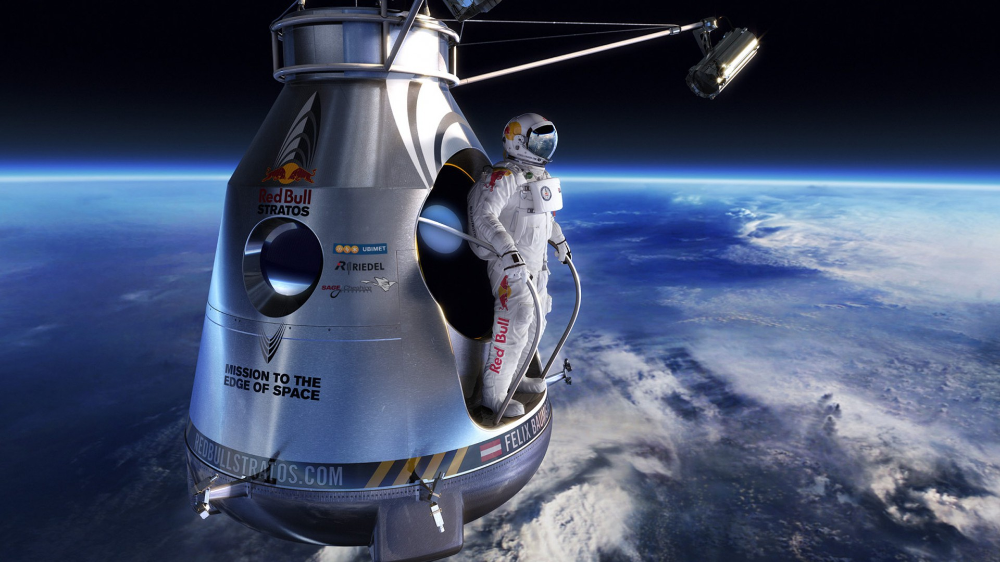
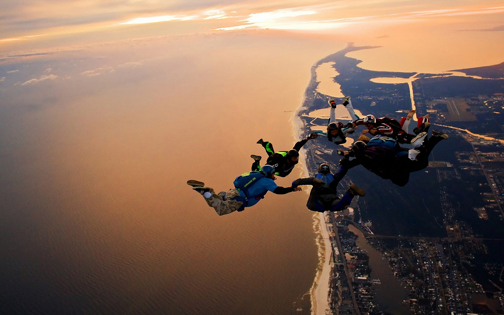
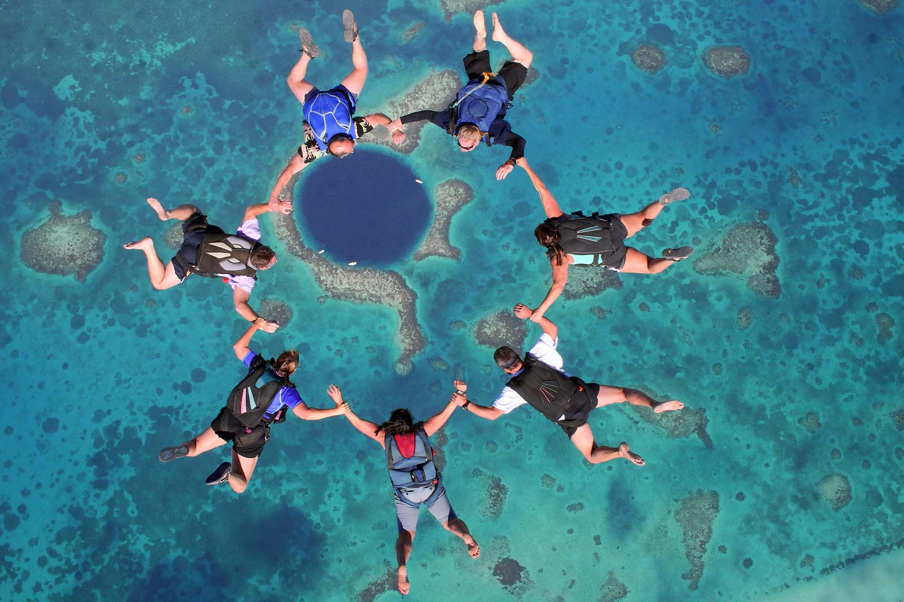
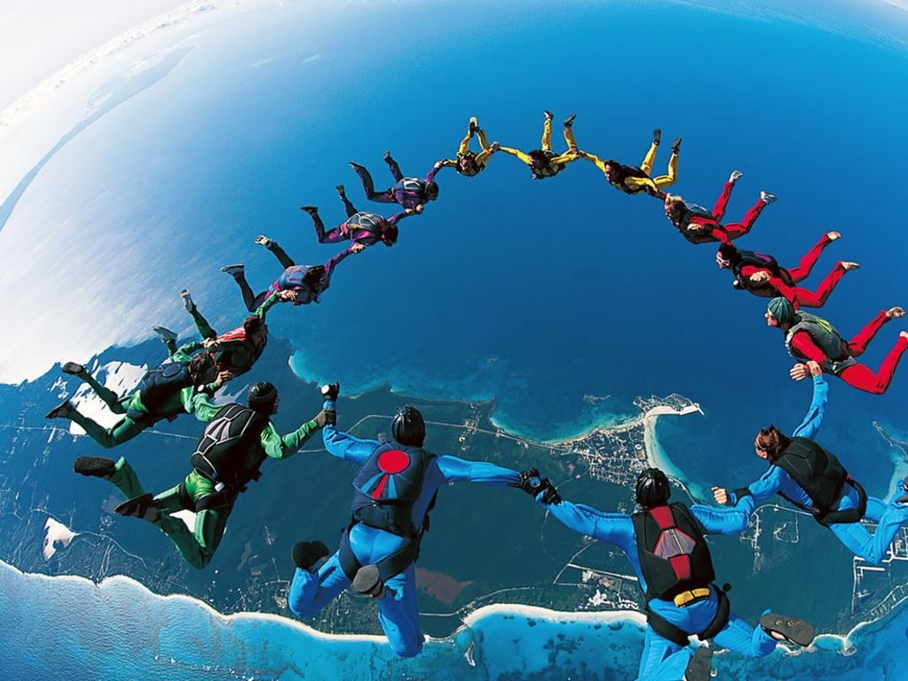

Free Jump
Date of the free jump
It is the action sport of exiting an aircraft and returning to Earth with the aid of gravity, then slowing down during the last part of the descent by using a parachute. It may or may not involve a certain amount of free-fall, a time during which the parachute has not been deployed and the body gradually accelerates to terminal velocity. Andre-Jacques Garnerin was the first to make successful descents using a canvas canopy and small basket, tethered beneath a hot-air balloon. The first intentional freefall jump with a ripcord-operated deployment is credited to Leslie Irvin in 1919. The military developed parachuting technology as a way to save aircrews from emergencies aboard balloons and aircraft in flight, and later as a way of delivering soldiers to the battlefield. Early competitions date back to the 1930s, and it became an international sport in 1952. Parachuting is performed as a recreational activity and a competitive sport, as well as for the deployment of military airborne forces and occasionally forest firefighters.
Equipment
Suit
Wings
goggle
Felix
Stuff jumps
 
Thanks to large unpopulated areas to jump over, 'stuff' jumps become possible. Also known as "zoo jumps", in these jumps the skydivers jump out with some object. Rubber raft jumps are popular; where the jumpers sit in a rubber raft. Cars, bicycles, motorcycles, vacuum cleaners, water tanks and inflatable companions have also been thrown out the back of an aircraft. At a certain height the jumpers break off from the object and deploy their parachutes, leaving it to smash into the ground at terminal velocity.
Swoop and chug :
Tracking is where skydivers take a body position to achieve a high forward speed, flying their body to achieve separation from other jumpers and cover distance over the ground.
Tracking :
Using a vertical wind tunnel to simulate free fall has become a discipline of its own and is not only used for training but has its own competitions, teams and figures.
Tunnel flying :
Using a vertical wind tunnel to simulate free fall has become a discipline of its own and is not only used for training but has its own competitions, teams and figures.
Wingsuit flying :
Classic accuracy is running with opened parachute, in individual or team contest. The aim is to touch down on a target whose center is 2 cm in diameter. Target can be a deep foam mattress or an air-filled landing pad. An electronic recording pad of 32 cm in diameter is set in the middle. It measures score in 1 cm increments up to 16 cm and displays result just after landing.
First part of any competition take place over 8 rounds. Then in the individual competition, after this 8 selective rounds, the top 25% jump a semi-final round. After semi-final round the top 50% are selected for the final round. Competitor with the lowest cumulative score is declared the winner.